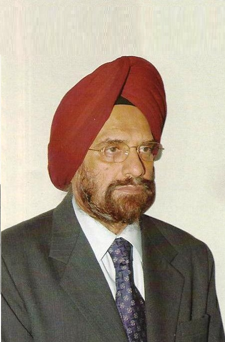
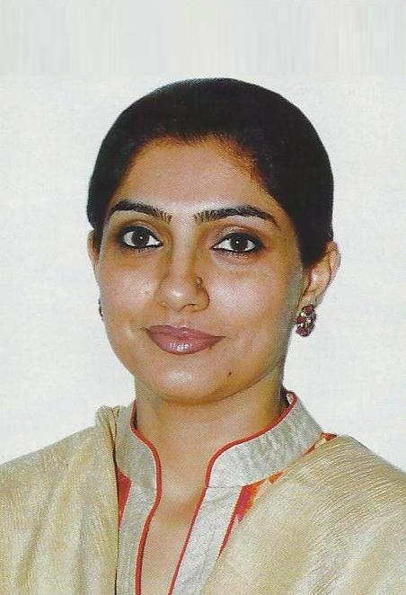
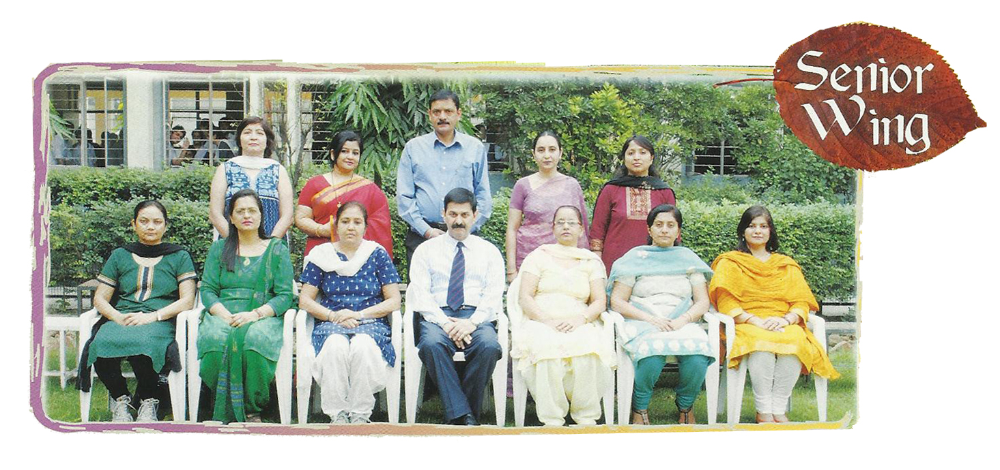
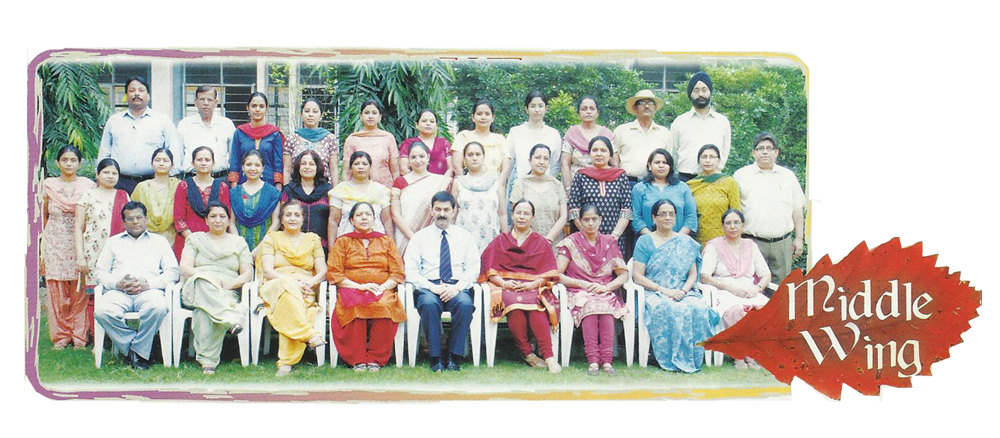
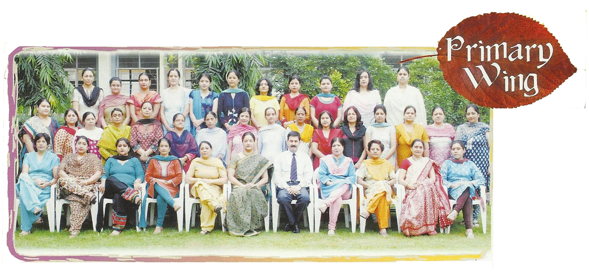

OUR MANAGEMENT

For over thirty three years, Mata Jai Kaur Public School has been rendering yeoman service in the field of education and trying its best to transform the personality of every child who moves away from its ramparts after years of formal schooling. At every trying step, we have had the privilege of receiving the support and motivation by confident parents, dedicated staff and our committed students. In all these years of experience, we have learnt a very simple yet very significant lesson-
“The needs of the society are like an ocean and the service we render are mere drops”
The onus of moulding the next generation, the nation’s backbone, into caring and responsible members of the society rests upon each of us. Thus, apart from academic excellence, the child must acquire the right habits, self-control, polite mannerisms and a passionate concern for the environment and the society. They ought to be challenged to be the inquirers so that they redefine the conventions and break the prejudices to be the pioneers of causes beyond the limited aspects of life. I foresee these children growing in their various capacities and making the school and their families proud.
Sd. Surjit Singh

Times change... times are changing... and with them have changed the perception of students, from mere survival to surviving with excellence. It is thus imperative that we keep abreast of the new pathways whilst we hold on to the vantage point of our goals.
The intrinsic value of education is in instilling in children the willingness, the passion, the perseverance to pursue excellence in life and combat failure and success with equal aplomb. It is for us to ensure that children are escorted to the threshold of their own minds and are motivated to make their own trajectories. What then remains is occasional monitoring and inspiring children to focus on remedies, not pitfalls.
I have utmost faith that the best form of learning emanates from one’s experiences. Our endeavor must be to make space for everyday experiences and let education take the course it will.
With good wishes.
Mrs. Rasna Singh
Go on top
TEACHING STAFF

Row 1 (L-R) :
Ms. Bhawna Alurkar, Ms. Anshu Babbar, Dr. Akshay Prakash, Ms. Harmeet Kaur, Ms. Vandana Sharma
Sitting (L-R) :
Ms. Sangeeta Aggarwal, Ms.Nancy Sehgal, Ms. Sangeeta Singh, Col. Ashok Kaul (Principal), Ms. Herpal Kaur, Ms. Meenal Bajaj, Ms. Aarti Tewary

Row 1 (L-R) :
Ms. Rimpy Dhingra, Ms. Monica Goswami, Ms.Vandana Balchandani, Ms. Arvinder Kaur, Ms. Deeksha Soni, Ms. Anita Adhlakha, Ms. Kanika Singh, Ms. Dilmeet Kaur, Ms. Bhawna, Ms. Harveer Kaur, Ms. Pratibha Gupta, Ms. Meena Sharma, Ms. Poonam Sharma, Mr. Rajesh Singh.
Row 2 (L-R) :
Mr. Narendra Kumar Gupta, Mr. Mahesh Dutt, Ms. Santa Chaudhary, Ms. Jaspreet Kaur, Ms. Seema Sood, Ms. Iqbal Kaur, Ms. Lovin Kakkar, Ms. Harpreet Kaur, Ms. Gurpreet Kaur, Mr. K.Kumar, Mr. Jatinder Singh.
Sitting (L-R) :
Mr. Ravi PiIlai, Ms. Sumit Kaur, Ms. Veena Kalra, Ms. Kiran Gupta, Col. Ashok Kaul (Principal), Ms. Anju Budhiraja, Ms. Manju Mehta, Ms. Sushma Prakh, Ms. Jaspal Kaur.

Row 1 (L-R) :
Ms.Simple Kaur, Ms. Charu Srivastava, Ms. Poonam Narang, Ms. Vineeta Dhir, Ms. Mamta Sharma, Ms. Gurdeep Kaur, Ms. Meena Saxena, Ms. Pankaja Dutta, Ms.Karuna Diwan, Ms. Shashi Gupta, Ms.Parul Sharma ,Ms. Anita Adlakha, Ms. Kajal Dawar, Ms. Anju Shakya, Ms. Kulwant Gujral, Ms.Padma Manchandani.
Row 2 (L-R) :
Ms. Dipinder Kaur, Ms. Jaswinder Kaur, Ms. Gurpreet Kaur, Ms. Sunil Bhaan, Ms. Shweta Tewari, Ms. Nandini Burman, Ms. Monica Rana, Ms. Ritu Trehan, Ms. Vineeta Handa, Ms. Deepa Bhandari, Ms. Jaspreet Kaur.
Sitting (L-R) :
Ms. Sunita Sharma, Ms. Suparna Khattar, Ms. Venu Tulsi, Ms. Shammi Luthra, Ms. Uppal , Ms. Mandeep Punnia(Headmistress) , Col. Ashok Kaul(Principal), Ms. Sneh Malik, Ms. Sushmita, Ms. Amit Kaur.
Go on top